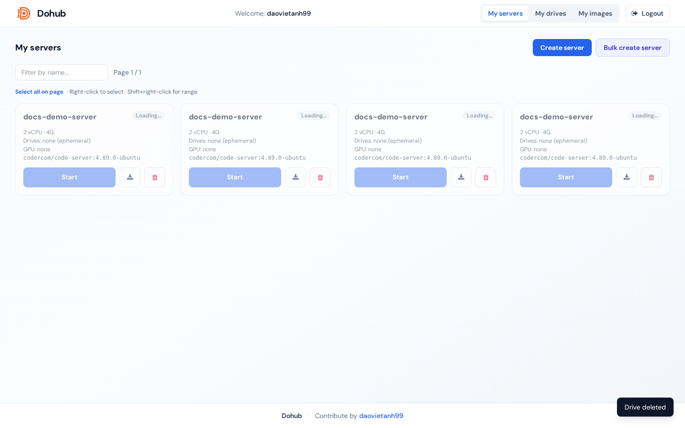
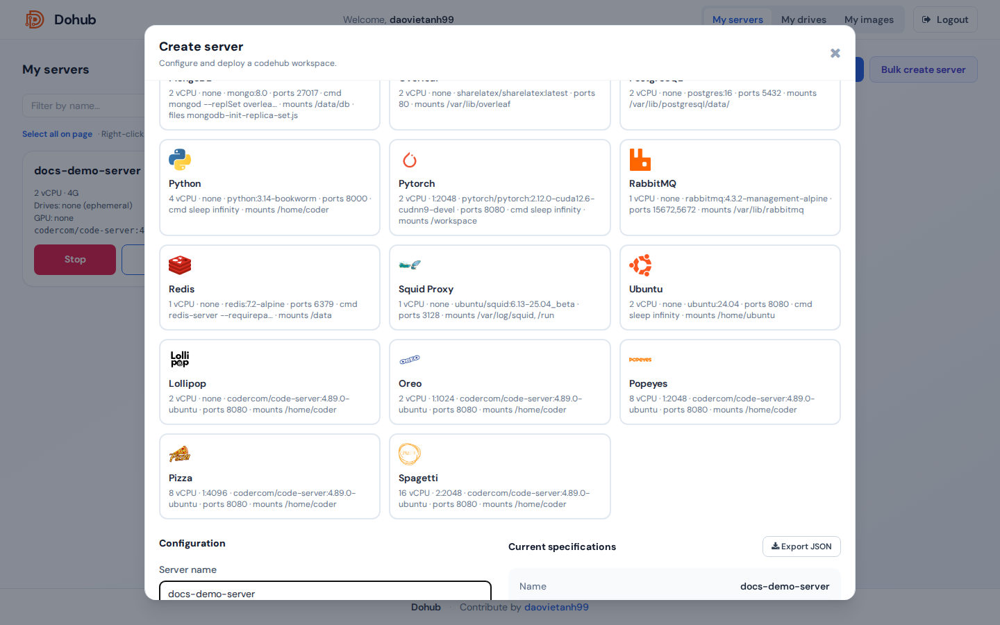
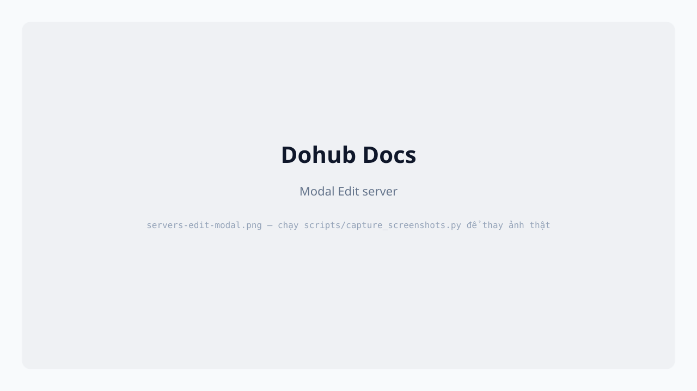
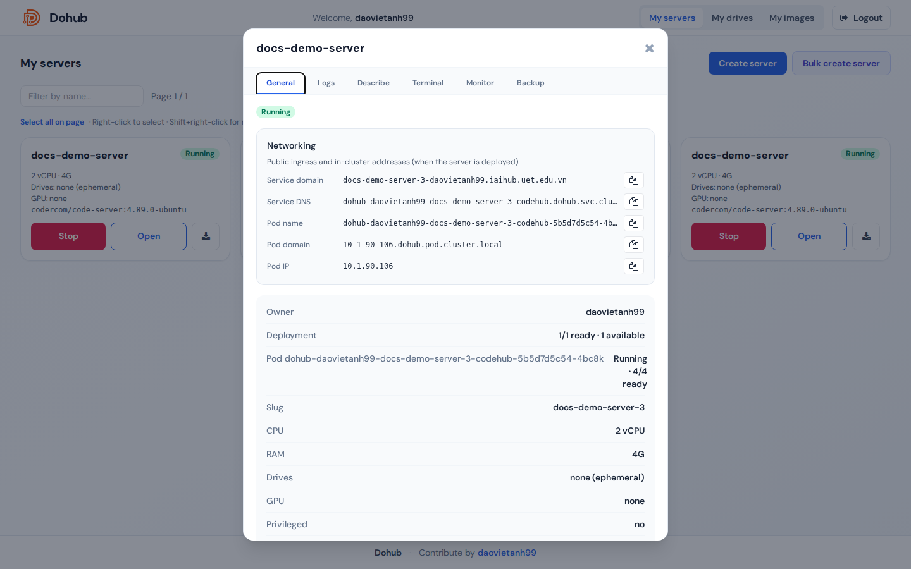
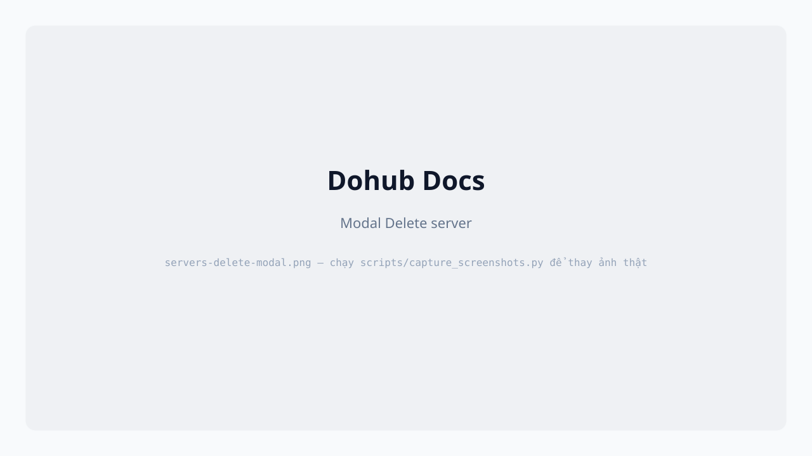

Người dùng
Quản lý server (workspace)
Tạo, chỉnh sửa, bật, tắt và xóa server — từ template hoặc form thủ công.
Server (workspace) là một Helm release codehub trên Kubernetes: container chính (thường code-server), ingress riêng, optional sidecar (monitor, backup, wstunnel).

Luồng tổng quan
- Create server — lưu cấu hình vào DB (pod chưa chạy).
- Start — Helm install/upgrade, tạo pod + ingress.
- Stop — gỡ release, giữ cấu hình.
- Edit — chỉ khi server offline.
- Delete — xóa workspace và release (nếu có).
Tạo từ Quick template
- Tab My servers → Create server.
- Phần Quick templates: click một template (Lollipop, Oreo, …) để điền sẵn CPU, RAM, GPU, image, mounts.
- Kiểm tra lại form bên dưới, nhấn Create server.
Tạo thủ công — từng trường

| Trường | Mô tả |
|---|---|
| Server name | Tên hiển thị; slug dùng cho URL và release name. |
| Service domain | Chỉ hiện nếu group có quyền custom domain. Hostname ingress tùy chỉnh; để trống dùng {slug}-{user}.{DOMAIN}. |
| CPU (vCPU) | Request CPU; limit ≈ 1.5× (theo chart). |
| RAM | Ví dụ 4G, 8G. |
| Node | auto hoặc pin pod lên hostname cụ thể. |
| Mount drives | Chọn drive + mount path (mặc định /home/coder). Nhiều drive: + Add drive. |
| Mount files | File nhỏ → ConfigMap mount (tên file, path, nội dung). |
| GPU | none hoặc profile HAMi (ví dụ mig-2g.10gb, gpu, gpu:2). |
| Privileged container | Checkbox nếu group cho phép — securityContext.privileged. |
| Docker image | Combobox tìm image đã đăng ký / catalog. |
| Version (tag) | Tag image (ví dụ 4.89.0-ubuntu). |
| Image pull policy | IfNotPresent, Always, Never. |
| Exposed ports | Port HTTP chính + phụ, phân tách dấu phẩy (mặc định 8080). |
| Container command | Override CMD; để trống dùng mặc định image. |
| Environment variables | KEY + value, Add / Update. Hỗ trợ value dài (textarea). |

Panel Current specifications tóm tắt cấu hình; Export JSON tải file cấu hình.
Chỉnh sửa server
- Stop server trước (bắt buộc).
- Mở card server hoặc modal → Edit (hoặc mở lại Create server ở chế độ edit).
- Thay đổi trường → Save changes.

Start / Stop

- Start — triển khai pod; URL workspace xuất hiện sau khi Running.
- Stop —
helm uninstall; dữ liệu trên PVC drive vẫn giữ.
Xóa server
- Nên Stop trước (khuyến nghị).
- Icon Delete trên card → gõ
delete→ Delete.

Bulk create server
Bulk create server — JSON/CSV nhiều server; tùy chọn Start servers after create.
[{"name":"docs-demo-ws","cpu":2,"ram":"4G","drive_mounts":[{"drive_id":"<uuid>","mount_path":"/home/coder"}],"docker_repository":"codercom/code-server","docker_tag":"4.89.0-ubuntu"}]Quan trọng: Không chỉnh sửa/xóa server production. Demo: tạo
docs-demo-* rồi xóa ngay.